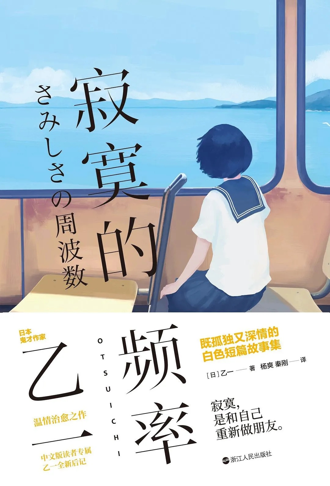

“白乙一”的典范，故事比起“黑乙一”来说稍显平淡乏味，但仍能感受到其中的巧丝和诡异中的一点温暖，“寂寞”的感觉描写的细微透彻…
何为寂寞
人生似乎就像月亮这样，有圆满，有缺憾，有喧闹，也有寂寞。那么什么才是寂寞呢？乙一的这本小说中没有一次出现”我很寂寞，我需要陪伴“这样的句子。就像书的简介所说这是***“等待是寂寞，孤独是寂寞，遗憾是寂寞，成全是寂寞。我们相遇，也是因为寂寞。”*** 每一篇都像是一个人的诉说着自己的故事，时而平静，时而波动。读这本书就像听他们叙述自己的人生，明明很平淡的叙述着故事，没有突然的转折和强烈的冲突，但就偏偏有一种无法忽视的悲伤叙述着这种寂寞。阅读的时候将自己的情绪与寂寞的频率相同步，而阅读完之后这种悲伤又很快消失，只留下叹息的寂寞。就像一团烟雾一样萦绕在脑海中，在你想要抓住它的时候，又惘然消散。
书中通过四个不同的故事诠释了四种孤独和感伤。人生总是，在未来潜伏着不安，过去纠缠着后悔，现在环绕着不满。所以我们也能通过文字找到潜藏其中的共情，那是属于我们所有人的寂寞，就像书名一样，频率似乎对上了。
我们都有绝望无助、走投无路的瞬间，或足够幸运被包容、被原谅，或一失足成千古恨，只能抱憾终身。
落寞和伤感在心中流转之时，我们会不知所措，可心中对生命的向往与热爱还是会有一丝温暖的吧。
看完留下无尽的孤独，满腹的遗憾，可仍有些许的温暖。万般皆寂寞，但也有人心温暖，这就是真实的人生。
故事之外
静下心回头看，其实四篇故事里除了最后一篇。其他三篇其实是有些无聊的，故事中的寂寞似乎就是和书名一样，这些寂寞是有频率的，心情的频率无法对上的话，就会感受到一种为了写作而写作的“悲伤”，这是很无聊的，可乙一细致的情绪刻画让我在阅读时其实是同步上了频率的，这也是他厉害的地方吧。但是单看故事的话，真的很一般。
可能是我读过太多乙一的其他书了吧，说是温馨的故事，实际上乙一故事里特有的恐怖氛围（特别是《胶卷中的少女》）始终萦绕，导致结局有种出乎预期的不协调感，这种感觉反而让我不是很喜欢。
回头一看全部的故事，似乎都有遗憾，对过往的遗憾似乎就是共通的寂寞？我不知道。
单人频率
不希望容易自怨自艾的人看乙一的书，他的很多短篇会连带有些朋友被感染到忧伤，就常常会顾影自怜起来。
见物如见心。
看乙一的作品里得到共情的人，温暖阳光也好悲伤恐惧也罢，多半自己内心也有类似的情感，这就是所谓频率对上了吧。当然，善良的人便有善良的情感，这些情感都是值得肯定的，然而这样的情感太剧烈，也许大抵是满痛苦的。
乙一书里的极端场景下的生命的压抑与绝望，是不是真的有那么大的杀伤力？以及阴霾中隐隐透出的光是否真的能应该让自己感动到那样的地步？
回头看来，因为每个人的人生都是不一样的，每个人的寂寞也真的都是不一样，寂寞始终只是一个人的调频，在他人的寂寞中感受到自己的寂寞，只不过是展示将自己的寂寞调频了。
关于受伤，始终是要靠自己治愈。 或者不治自愈。
接下来的内容是个人对每个故事的一些想法，涉及剧透

故事之内
未来预报
小时候一直在想未来会怎么样，想着能预测未来就好了。那么知晓未来到底是好事还是坏事呢？而且还是在无法确定知晓的未来是不是真正的未来的情况下呢？如果真的知晓了未来，沿着未来轨迹的我们真的可以没有遗憾吗？我想更多的还是害怕，这种恐惧比未知的未来更让人恐惧，怀疑的心情会淹没对未来的期望。
证明未来的代价似乎就是让两人的心意留下**“**遗憾”。
我们的关系就是“没有关系”，这样的说法真让人悲伤啊，可在**“**没有关系”的情况下依旧彼此挂念，这种感觉好温暖啊，但似乎也更寂寞了…
再平凡的人在这个世界上或许都有人在牵挂着他，即使他曾经一无是处，即使他对未来茫然若失，因此这个世界上没有毫无意义的人生，这份牵挂希望最后每个人都能抓住…
小偷抓住的手
小偷抓住的手，就像书的名字，也许就是处于同一频率的人捕捉到彼此，相遇、碰撞后回到自己的频率，探视自己的内心找到属于自己的答案。
真是一段奇妙的际遇，本来我以为抓到的是表妹的手，没想到是另一个与主人公有相同烦恼的灵魂。虽然只有一双抓住的手但好像却是三个人处在同一频率：表妹不太愿意上姑妈想让她读的学校；父亲不认同“我”做手表设计；女明星想要逃离母亲安排的生活……
在寂寞碰撞的时光中两个灵魂似乎也受到开导，最后两人心中的烦恼解开。主人公也发现自己对钟表的执着是源于父亲送的表，一直想要成功也是为了父亲的认同，可惜父亲在他成功之前就已离世…
表面上的故事是说主人公的际遇，可给我的感觉更多是孩子与父母之间的故事。乙一似乎想告诉我们要用爱去理解父母的心意，但又不能盲从父母的建议，人生是需要自己慎重思考的。
胶卷中的少女
剧情在仅凭一个人自言自语般的对话中推展，在这篇白乙一故事集里似乎也有着黑乙一特有的惊悚感，明明很平淡的叙述着故事，却又让人忍不住一直的猜测。
“我”是与“她”同频的人，“她”曾真真切切地活着，“我”也曾认认真真地想过自杀，“我们”的年龄相近，读过的学校相同，喜欢的东西也相似，甚至连相貌气质都有几分相似。而“我”在冥冥中受到了“她”的指引，放弃了自杀，选择了另一种认真生活的方式，感受“她”活着的一切，帮“她”了却了心愿。去感受“她”对世界的向往与爱还有对生命的遗憾。
伤害我们最深的人是我们最亲的人，我们需要原谅吗？这个女孩真的很善良很纯真，她原谅了所有人，选择了“爱”。
悲伤、遗憾，但也很温暖的故事。
失去的世界
这一个故事是让我心情最复杂的故事，看完之后一股深深的无力感充斥全身。
你有想过变成植物人之后的世界吗？当某一天只能用一只手的触觉去感受这个世界，没有光亮，没有声音。当这种感觉被无限放大，却能感受到彼此间流动的爱，而当我们拥有五感的时候，却麻木的无法互相理解互相包容....…
最后在独自被遗忘的世界，我选择了使自己被遗忘的选择。为了让妻子女儿在遗忘我的世界好好生活。比起记得我，陪伴拉扯，还是忘了我好。
这种好像被全世界丢弃遗忘了的感觉，光是想一想就让人窒息难过了。
清醒着坠入时间的深渊是我认为最恐怖最孤独的事情了
我描绘着早已逝去的风景，静静地把自己重新交给了无穷无尽的黑暗。
——《失去的世界》
其实回首一看，其实黑乙一也好，白乙一也罢，贯穿他作品核心主题都是“孤独”或者说“寂寞“吧。而我们的人身何尝不是**“孤独”和“寂寞”**的呢
2023/6/22
Yuay
@Yuay